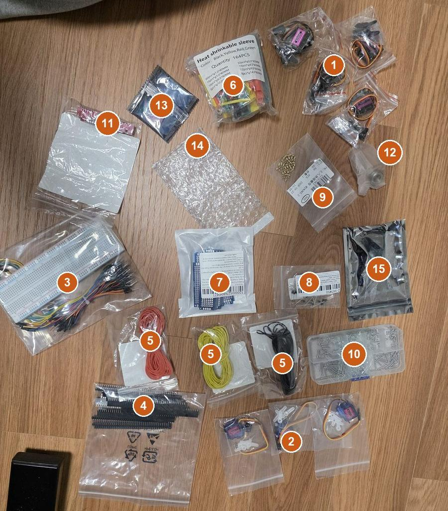
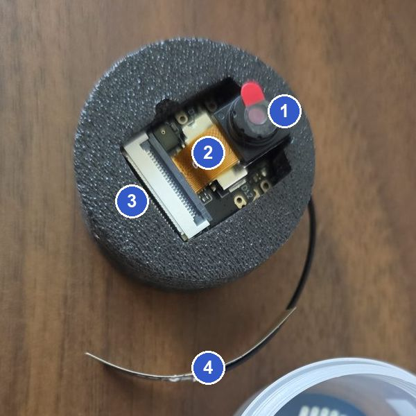
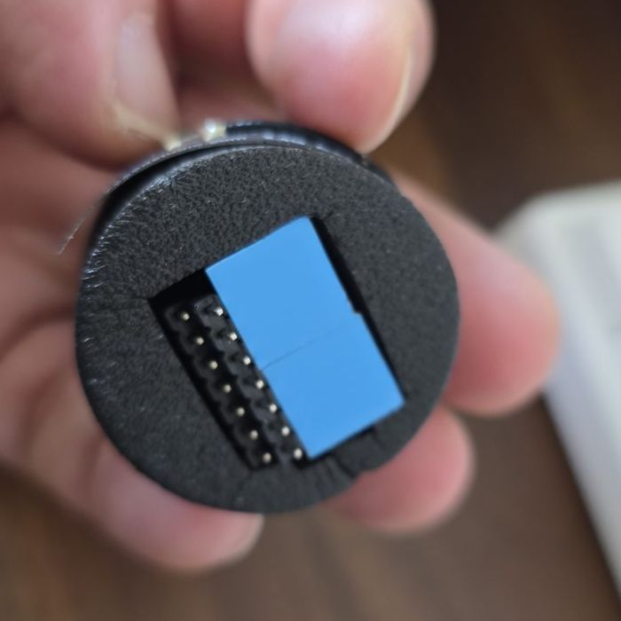
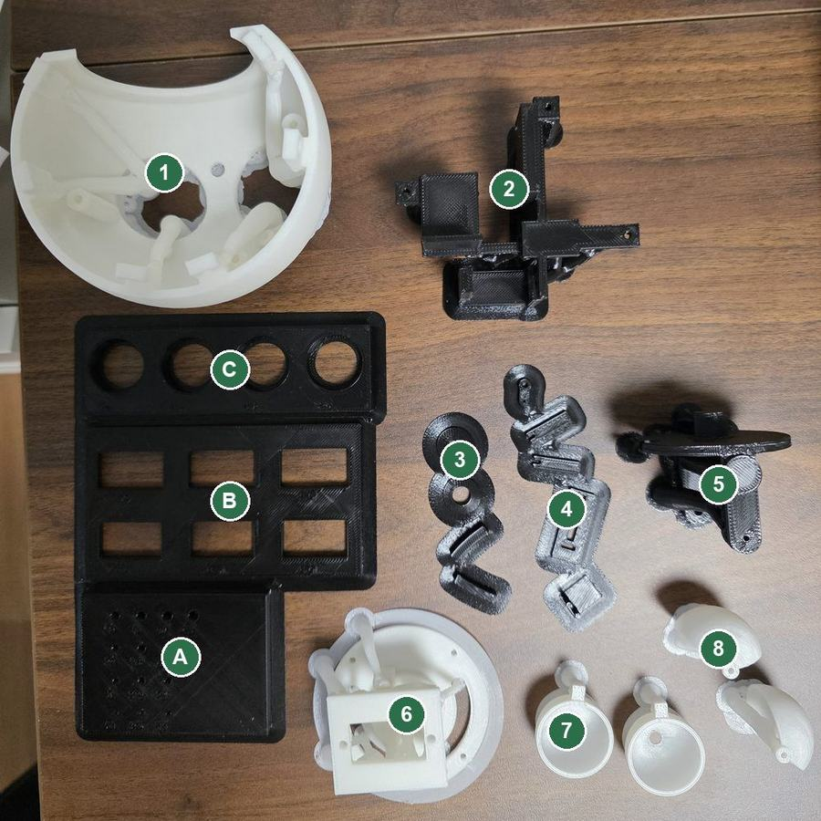
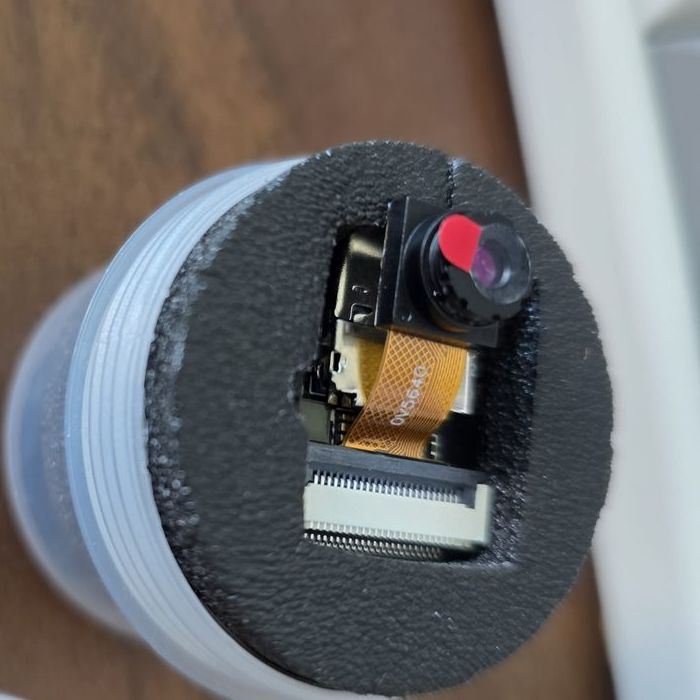
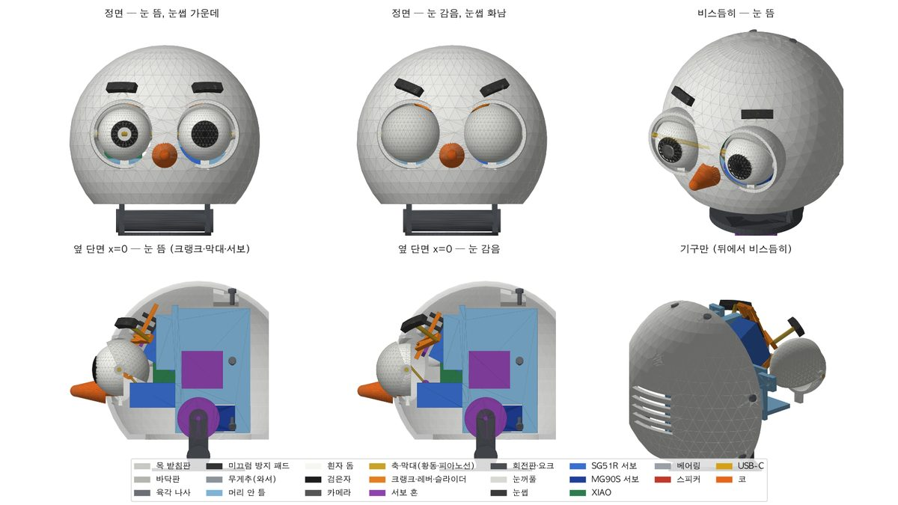
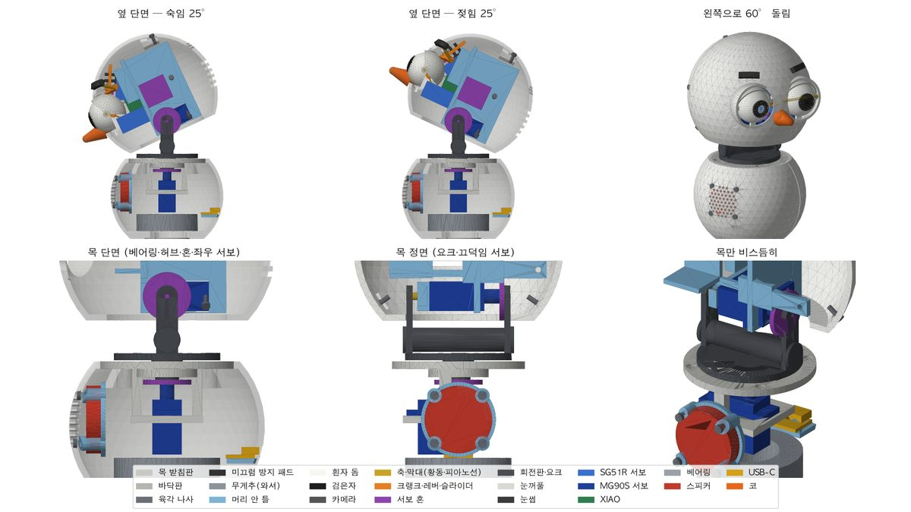
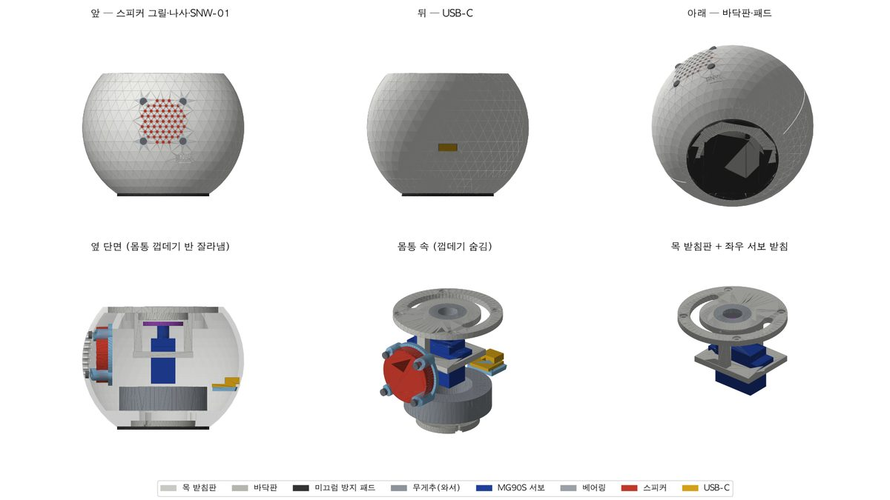
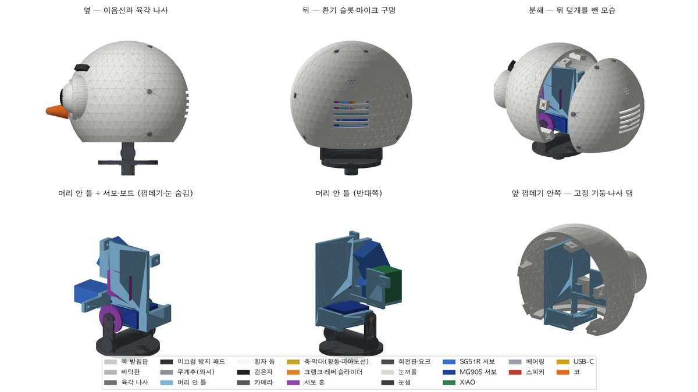

- 마스킹테이프에 위 표의 번호와 이름을 적어 봉지에 붙입니다.
- 맞는 봉지는 표의 네모를 체크합니다.
- 5·6·7번(전선·수축튜브·만능기판)은 옆으로 치웁니다. 오늘은 쓰지 않습니다.
나중에 "작은 서보 하나 주세요" 같은 순간에 바로 찾기 위해서입니다. 비슷한 투명 봉지가 많아 섞이기 쉽습니다.
표의 1~15번이 체크되어 있습니다.
이 페이지는 오늘부터 할 일을 순서대로 적은 작업 안내서입니다. 오늘 눈사람을 다 닫아 완성하지는 않습니다. 몸통과 머리 뒤 덮개는 아직 출력하지 않았기 때문입니다. 오늘 목표는 세 가지입니다.
한 번에 다 하지 않아도 됩니다. 각 구역이 끝나는 곳에서 쉬어도 됩니다.
있는 것을 체크해 두세요. 없는 것이 있으면 그 단계만 건너뛰면 됩니다.
공구는 아직 필요 없습니다. 마스킹테이프와 펜만 있으면 됩니다.

| 번호 · 부품 | 어디에 쓰나 | 확인할 것 | |
|---|---|---|---|
| 1 MG90S 서보 4개 보라 라벨, 쇠 톱니 | 고개 좌우 1, 끄덕임 1, 여분 2 | 사진으로 확인 | |
| 2 작은 파란 서보 3개 흰 혼이 같이 있음 | 눈꺼풀 1, 눈썹 1, 여분 1 | 라벨 읽기 4번 단계 | |
| 3 브레드보드 + 점퍼선 | 오늘 시험 배선 | 사진으로 확인 | |
| 4 핀 헤더 (긴 검은 줄) | 여분. XIAO 는 상자에 든 7핀 헤더를 씁니다 | 사진으로 확인 | |
| 5 실리콘 전선 빨강·노랑·검정 | 나중에 목을 지나는 선 | 오늘은 자르지 않음 | |
| 6 수축튜브 164개 | 납땜한 자리를 감싸는 고무관 | 오늘은 그대로 둠 | |
| 7 파란 만능기판 10장 | 시험이 끝난 뒤 최종 배선 | 오늘은 그대로 둠 | |
| 8 다이오드 50개 | 컴퓨터 없이 켤 때 XIAO 보호 | 골라야 함 3번 단계 | |
| 9 금색 M2 인서트 50개 | 출력물에 쇠 나사산 만들기 | 라벨 M2×3×3.2 | |
| 10 M2 나사 칸 상자 | 인서트에 조이는 나사 | 사진으로 확인 | |
| 11 빨간 USB-C 기판 5개 | 충전기 전기를 브레드보드로 | 글자 확인 5번 단계 | |
| 12 베어링 (은색 링) | 목. 머리 무게를 받음 | 치수 6번 단계 | |
| 13 보라 기판 (앰프) | 스피커 소리 키우기 | 오늘은 사진만 | |
| 14 스피커 (뽁뽁이 안) | 몸통 앞 목소리 | 오늘은 그대로 둠 | |
| 15 은색 봉투 | 1000µF 콘덴서로 추정 | 열어 보기 5번 단계 | |
| 16 XIAO ESP32S3 Sense 둥근 투명 통 | 두뇌 보드 + 카메라 + 마이크 | 2번 단계 |
표의 1~15번이 체크되어 있습니다.


XIAO 앞면 왼쪽 아래에 지름 2mm 쯤 되는 작은 동그란 금속 단자()가 있습니다. 안테나 선 끝의 동그란 머리를 그 위에 올리고, 한쪽 가장자리를 먼저 걸친 다음 반대쪽을 살짝 눌러 "딸깍" 끼웁니다. Seeed 안내에 따르면 한가운데를 세게 누르면 잘 안 들어가고 손가락만 아픕니다. 뺄 때도 선을 잡아당기지 말고 한쪽을 들어 올리듯 뺍니다.
헤더 두 줄, 파란 조각 두 개, 안테나가 통 안에 있고, 보드는 스펀지에 그대로 있습니다.
8번 봉지는 이름이 "1N5817" 이지만, 판매 페이지 제목에 여러 종류(1N4001, 1N4007 등)가 함께 적혀 있었습니다. 혹시 섞여 왔을 수 있으니 몸통 글자를 읽어 골라 둡니다.
"전원용" 통에 1N5817(또는 1N5819)이 2개 이상 있습니다.
작은 파란 서보는 SG51R 로 주문했습니다. 생김새가 비슷한 SG90 이 대신 오는 일이 흔합니다. SG90 은 조금 더 커서 눈 자리에 들어가지 않습니다. 라벨 글자를 그대로 적어 주세요.
개수가 4 와 3 이고, 라벨 칸이 채워져 있습니다. 개수가 다르면 그대로 적고 넘어갑니다.
11번 빨간 기판: 흰 카드에서 하나만 떼어 냅니다. 기판 위의 하얀 글자()를 봅니다. VBUS 또는 5V, 그리고 GND 가 있으면 전원 보드가 맞습니다. 핀은 이미 납땜되어 있어 브레드보드에 바로 꽂힙니다. CC1·CC2·D+·D− 같은 다른 글자는 오늘 쓰지 않습니다.
15번 은색 봉투: 열어서 원통 모양 부품에 1000µF 가 적혀 있으면 입니다. 하나만 꺼내고 나머지는 봉투에 둡니다.
네. VBUS 는 USB 에서 들어오는 5V 선의 이름입니다. 5V 와 같은 뜻으로 보면 됩니다.
시험용 빨간 기판 1개와 콘덴서 1개가 꺼내져 있습니다.
지금 설계는 판매 페이지에 적힌 크기로 그렸습니다. 같은 이름의 서보도 공장마다 0.5mm 쯤 다를 수 있습니다. 직접 잰 값으로 2차 출력 파일을 고칩니다.
보내 주신 기록에서 확실한 값은 2차 설계에 이미 넣었습니다: 나사 구멍 2.2, 베어링 자리 19.2, MG90S 폭 11.8·높이 22.4, SG51R 폭 12.3, 렌즈 구멍 7.2, 스피커 두께 5.5. 남은 것은 아래 다섯 개입니다. 이 값으로 서보 자리 위치와 목 높이를 정하고 2차 출력 파일을 확정합니다.
다 적으면 맨 아래 기록에서 "기록 복사"로 다시 보내 주세요.
카메라 리본은 지금 소켓에 꽂혀 있으니, 리본을 당기지 말고 렌즈 쪽 끝에서 소켓 입구까지 보이는 길이만 재면 됩니다.
MG90S, 작은 서보, 베어링 칸이 채워져 있습니다.
필요한 것: 1차 출력물, 인두, M2 인서트·나사, 황동봉, 피아노선, 서보, 베어링.
3D 프린터는 녹인 플라스틱을 실처럼 쌓아서 모양을 만듭니다. 그래서 설계에 "구멍 지름 3.0mm" 라고 그려도 실제 구멍은 조금 작게 나오는 경우가 많습니다. 얼마나 작게 나올지는 프린터와 재료마다 다릅니다.
그래서 같은 구멍을 크기만 조금씩 다르게 여러 개 뚫은 판을 먼저 뽑았습니다. 실제 부품을 하나씩 끼워 보고 가장 잘 맞는 구멍의 숫자를 고르면, 그 숫자로 진짜 부품(몸통·머리 뒤)을 출력합니다. 이렇게 하면 비싼 큰 부품을 다시 뽑는 일이 줄어듭니다.

3·4·5번은 사진만으로 이름을 정확히 가리기 어렵습니다. 지지대를 떼면 모양이 드러나니, 다르면 메모에 적어 주세요.
세 판의 숫자가 읽힙니다.
는 플라스틱에 쇠 나사산을 만들어 주는 금색 작은 통입니다. 플라스틱 구멍에 바로 나사를 조이면 몇 번 풀었다 조이면 구멍이 뭉개지지만, 인서트를 박아 두면 여러 번 조여도 괜찮습니다.
| 보이는 것 | 뜻 |
|---|---|
| 인서트 둘레 플라스틱이 부풀거나 갈라짐 | 구멍이 너무 작음 |
| 나사를 조이면 인서트가 같이 빙글 돎 | 구멍이 너무 큼 |
| 똑바로 들어가고, 나사를 조여도 안 돎 | 이 숫자를 고릅니다 |
아직 따뜻할 때 인두를 다시 넣어 살짝 세우면 바로잡힐 때가 많습니다. 안 되면 그 구멍은 비교에서 빼고 다음 구멍으로 갑니다. 시험 판이라 괜찮습니다.
한 숫자가 골라져 있습니다. 얼굴(앞 껍데기)에는 아직 박지 않습니다.
| 줄 | 넣어 볼 것 | 고르는 기준 |
|---|---|---|
| 2줄 (2.2 / 2.4 / 2.6) | M2 나사 | 손으로 밀어 힘없이 지나가는 가장 작은 구멍. 나사가 걸리지 않고 통과해야 두 부품을 조일 수 있습니다. |
| 3줄 (2.0 / 2.15 / 2.3) | 2mm | 넣고 돌리면 부드럽게 돌고 덜컹거리지 않는 구멍. 눈꺼풀이 이 봉을 축으로 돕니다. |
| 4줄 (1.1 / 1.25 / 1.4) | 1mm | 걸리지 않고 도는 구멍. 서보와 눈꺼풀을 잇는 막대가 들어갑니다. |
세 칸이 채워져 있습니다. 봉과 선은 아직 자르지 않습니다.
망치로 치지 않습니다. 서보 축을 손으로 세게 돌리지 않습니다(안의 톱니가 상합니다).
두 칸이 채워져 있습니다. 안 들어가면 "안 들어감"을 고르고, 머리 틀의 창을 칼로 넓히지 않습니다.
은 목에서 머리 무게를 받아, 고개가 부드럽게 돌게 해 주는 쇠 고리입니다.
이미 출력된 목 받침판(6번)의 자리는 19.1 로 뽑혀 있습니다. 여기서 19.1 이 맞아야 24번 단계에서 받침판에 넣습니다.
한 숫자가 골라져 있습니다.
얼굴(앞 껍데기)과 머리 안 틀의 인서트 구멍은 3.0 으로 출력돼 있습니다.
위 칸이 채워져 있습니다. 여기까지 하고 쉬어도 됩니다.
필요한 것: XIAO, 헤더, 인두, 브레드보드·점퍼선, 빨간 USB-C 기판, 콘덴서, 서보, 컴퓨터, USB-C 데이터 케이블, 충전기.
서보를 움직이려면 두 가지가 필요합니다. "몇 도로 가라"는 명령과 움직일 힘(전기)입니다. 이 시험에서는 둘을 서로 다른 곳에서 받습니다.
서보는 멈춰 있다가 움직이기 시작하는 순간 전기를 많이 씁니다. MG90S 두 개가 동시에 출발하면 컴퓨터 USB 포트가 주는 양을 넘을 수 있습니다. 그러면 XIAO 가 꺼졌다 켜지거나, 컴퓨터가 USB 포트를 잠시 끊습니다. 충전기는 이런 순간 전류를 더 넉넉하게 줍니다.

억지로 하지 말고 붙인 채로 둡니다. 14번에서 헤더를 납땜할 때 인두를 카메라 쪽으로 기울이지 않도록 조심하면 됩니다. 브레드보드에 꽂았을 때 Sense 보드가 판에 닿아 핀이 끝까지 안 들어가면, 점퍼선(수-암)을 헤더 핀에 끼워 브레드보드와 잇는 방법도 있습니다. 그때는 저에게 사진을 보내 주세요.
XIAO 본 보드만 손에 있고, 카메라 쪽은 통에 안전하게 있습니다.
14개 핀이 모두 반짝이는 작은 산 모양이고, 이웃 핀끼리 납으로 붙은 곳이 없습니다. XIAO 가 브레드보드에 꽂힌 채 흔들리지 않습니다.
Arduino IDE 는 보드에 넣을 프로그램을 쓰고 하는 무료 프로그램입니다. 처음 한 번만 설치·설정하면 됩니다.
Arduino IDE → Settings…(한국어 화면이면 기본 설정)의 Additional boards manager URLs 칸에 아래 주소를 붙여 넣고 OK.
https://raw.githubusercontent.com/espressif/arduino-esp32/gh-pages/package_esp32_index.json
esp32 를 검색해, esp32 by Espressif Systems 를 설치합니다. 몇 분 걸립니다.ESP32Servo 를 쓰려 했지만, 지금 버전 조합(esp32 3.3.12 + ESP32Servo 3.2.1)에서 서보 4개를 붙이면 D0·D3 의 신호가 끊겨서(2026-11-07 확인), 칩에 들어 있는 기능(LEDC)으로 서보 신호를 직접 만듭니다.Tools → Board → esp32 → XIAO_ESP32S3. 그리고 Tools → Port 에서 /dev/cu.usbmodem… 로 시작하는 항목을 고릅니다.Tools → USB CDC On Boot 가 Enabled 인지 봅니다. 이게 켜져 있어야 컴퓨터와 글을 주고받을 수 있습니다.Hard resetting via RTS pin... 같은 글이 나오면 끝입니다.ready 가 나옵니다.// 스노우봇 책상 시험용 (제품 펌웨어 아님)
// 보드: XIAO_ESP32S3, USB CDC On Boot: Enabled
// 라이브러리: 없음 (ESP32 내장 LEDC 로 서보 펄스를 직접 만든다)
// 시리얼 모니터 115200. 명령 예: p90 n120 l60 b90 c h t
//
// 2026-11-07: ESP32Servo 3.2.1 + esp32 코어 3.3.12 조합에서 서보 4개를 붙이면
// 같은 타이머를 쓰는 짝 중 먼저 붙인 쪽(D0, D3)의 펄스가 끊겼다(자가 진단 t 로 확인).
// 그래서 라이브러리 없이 ledcAttach 로 핀마다 50Hz 펄스를 낸다.
#include "driver/gpio.h"
const int PIN_PAN = 1; // D0 고개 좌우 (MG90S)
const int PIN_NOD = 2; // D1 끄덕임 (MG90S)
const int PIN_LID = 4; // D3 눈꺼풀 (작은 서보)
const int PIN_BROW = 6; // D5 눈썹 (작은 서보)
const int PINS[] = {PIN_PAN, PIN_NOD, PIN_LID, PIN_BROW};
const int FREQ = 50; // 50Hz = 20ms 마다 펄스 하나
const int RES_BITS = 14; // 20ms 를 16384 칸으로 나눔
const int US_MIN = 500, US_MAX = 2400; // 0도·180도 펄스 길이(마이크로초)
uint32_t dutyFor(int angle) {
long us = US_MIN + (long)(US_MAX - US_MIN) * angle / 180;
return (uint32_t)(us * (1L << RES_BITS) / 20000);
}
void setAngle(int pin, int angle) {
if (angle < 0) angle = 0;
if (angle > 180) angle = 180;
ledcWrite(pin, dutyFor(angle));
}
void help() {
Serial.println("p=좌우 n=끄덕임 l=눈꺼풀 b=눈썹 + 각도(0~180)");
Serial.println("예: p60 / c = 모두 90도 / h = 도움말 / t = 핀 자가 진단");
}
void selfTest() { // 각 핀이 실제로 펄스를 내보내는지 200ms 동안 잰다 (90도면 약 7.3%)
for (int p : PINS) {
gpio_input_enable((gpio_num_t)p);
long hi = 0, n = 0, edges = 0; int last = gpio_get_level((gpio_num_t)p);
unsigned long t0 = micros();
while (micros() - t0 < 200000) {
int v = gpio_get_level((gpio_num_t)p);
hi += v; n++; if (v != last) { edges++; last = v; }
}
Serial.printf("GPIO%d high=%.1f%% edges=%ld\n", p, 100.0 * hi / n, edges);
}
}
void setup() {
Serial.begin(115200);
delay(800);
for (int p : PINS) {
bool ok = ledcAttach(p, FREQ, RES_BITS);
setAngle(p, 90); // 켜지면 모두 가운데(90도)
Serial.printf("GPIO%d attach=%d\n", p, ok);
}
Serial.println("ready");
help();
}
void loop() {
if (!Serial.available()) return;
char which = Serial.read();
if (which == '\n' || which == '\r' || which == ' ') return;
if (which == 'h') { help(); return; }
if (which == 't') { selfTest(); return; }
if (which == 'c') {
for (int p : PINS) setAngle(p, 90);
Serial.println("all 90");
return;
}
int angle = Serial.parseInt();
if (angle < 0) angle = 0;
if (angle > 180) angle = 180;
if (which == 'p') setAngle(PIN_PAN, angle);
else if (which == 'n') setAngle(PIN_NOD, angle);
else if (which == 'l') setAngle(PIN_LID, angle);
else if (which == 'b') setAngle(PIN_BROW, angle);
else return;
Serial.print(which);
Serial.println(angle);
}
시리얼 모니터에 ready 와 도움말 두 줄이 보입니다. USB 는 꽂은 채로 둡니다.
VBUS(또는 5V) 핀과 같은 세로 줄 구멍 → 빨간(+) 레일을 잇습니다. 빨간 점퍼를 쓰면 헷갈리지 않습니다.GND 핀 줄 → 파란(−) 레일을 잇습니다. 검은 점퍼를 씁니다.다이얼을 V⎓(직류 전압, 20V 범위가 있으면 20)에 둡니다. 빨간 탐침을 빨간 레일 구멍에, 검은 탐침을 파란 레일 구멍에 살짝 넣습니다. 화면 숫자가 5 근처면 정상입니다. 앞에 − 가 붙으면 탐침을 바꿔 댄 것이니 걱정하지 않아도 됩니다.
충전기를 꽂았을 때 이상이 없었고, 지금은 뽑혀 있습니다.
XIAO 의 GND 핀은 USB-C 쪽에서 두 번째 핀입니다(위 핀 지도 참고). 그 핀과 같은 세로 줄의 빈 구멍에 검은 점퍼를 꽂고, 반대쪽 끝을 파란(−) 레일에 꽂습니다.
XIAO 의 5V 핀(USB-C 쪽 첫 번째 핀)에는 아무것도 꽂지 않습니다.
XIAO GND → 파란 레일 점퍼 하나가 꽂혀 있고, XIAO 5V 핀 줄은 비어 있습니다.
p60 을 치고 Enter → 혼이 한쪽으로 돕니다. p120 → 반대쪽. p90 → 가운데.p90p60 / p120ch처음에는 30~150 사이 각도만 씁니다. 싼 서보는 0이나 180 끝에서 "끼익" 하고 버티며 열이 날 수 있습니다.
p60 이 다시 찍히는지 봅니다. 안 찍히면 명령이 XIAO 에 안 간 것입니다(속도 115200, Port 확인).p60, p120, p90 대로 혼이 움직입니다.
선을 바꿀 때마다 충전기를 먼저 뽑습니다. 갈색·빨강은 언제나 레일, 주황만 아래 표의 핀으로 옮깁니다.
| 시험할 서보 | 주황 선 자리 | 명령 |
|---|---|---|
| 두 번째 MG90S (끄덕임 후보) | D1 | n60 n120 n90 |
| 작은 서보 (눈꺼풀 후보) | D3 | l60 l120 l90 |
| 작은 서보 (눈썹 후보) | D5 | b60 b120 b90 |
| 여분 MG90S 2개, 여분 작은 서보 1개 | 같은 방법 | 상태만 확인 |
잘 돌고 소리가 작은 것을 골라 테이프에 역할을 적어 붙입니다: 좌우, 끄덕임, 눈꺼풀, 눈썹, 나머지는 여분.
마지막으로 네 개를 각자 자리에 모두 꽂고 c 를 보내 모두 90도로 둡니다. 기구에 연결하기 전에는 언제나 90도로 맞춘 상태에서 혼을 끼웁니다. 그래야 양쪽으로 움직일 여유가 같습니다.
MG90S 2개 이상, 작은 서보 2개 이상이 명령대로 움직이고, 역할 테이프가 붙어 있습니다.
완성된 스노우봇은 컴퓨터 없이 충전기 하나로 켜집니다. 그때 XIAO 는 충전기 전기를 다이오드를 거쳐 5V 핀으로 받습니다. 이 단계는 그것을 미리 해 보는 것입니다. 건너뛰어도 됩니다.
충전기 하나로 XIAO 와 서보가 같이 켜졌고, 지금 다이오드는 빠져 있습니다.
13번 보라 기판(앰프)을 꺼내 하얀 글자 VIN GND BCLK LRC DIN 과 스피커 단자(＋ −) 쪽을 휴대폰으로 찍어 저에게 보내 주세요. 소리 코드를 그 글자 순서에 맞춰 준비합니다.
스피커 선을 XIAO 핀에 직접 대지 않습니다. 스피커는 언제나 앰프에만 연결합니다.
앰프 사진이 있고, 앰프와 스피커는 다시 봉지에 들어가 있습니다.
접착제·에폭시는 아직 쓰지 않습니다. 맞지 않는 곳을 찾는 것이 목적입니다.

어느 부품이 걸리는지(또는 다 맞는지) 메모에 한 줄 있습니다.
봉에 금이 있거나, 다음에 긋는다고 메모에 있습니다.

위 칸이 채워져 있습니다.
책상 위에 전원이 꽂혀 있지 않고, 인두가 꺼져 있습니다.
오늘 체크에는 넣지 않았습니다. 순서를 미리 보여 드리려고 적었습니다. 2차 출력 전에 철물점에서 M24 평와셔 2장, 에폭시, 바닥 미끄럼 패드, 3mm 핀(또는 M3 나사)을 삽니다.


이 페이지에 적은 값은 이 브라우저에만 저장됩니다. 다른 기기로 옮기거나 저에게 보낼 때는 복사해 주세요.
본문의 점선 밑줄 단어와 같은 설명입니다.